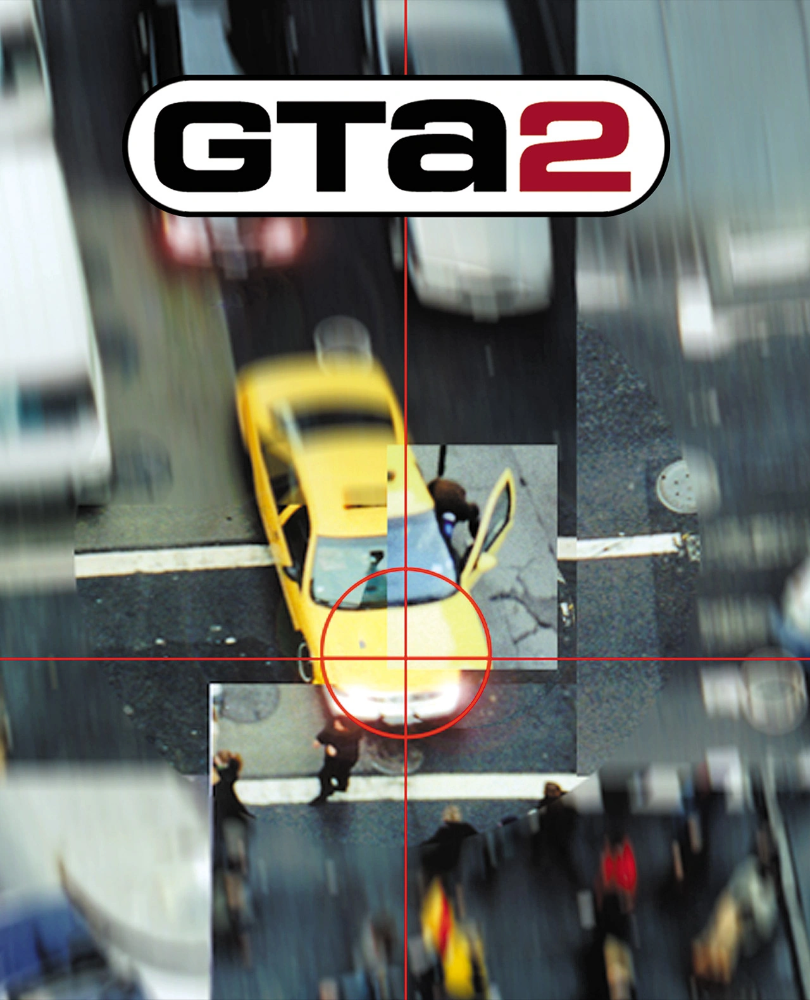
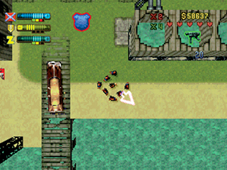
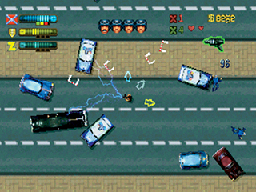
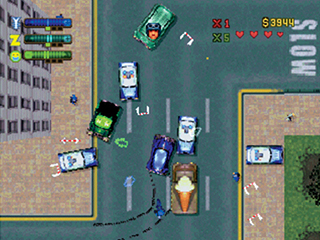

Grand Theft Auto 2

Descripción
Grand Theft Auto regresa y continúa la esencia de su predecesor, ofreciendo una experiencia de mundo abierto con perspectiva cenital que nos permite explorar una ciudad y realizar todo tipo de actividades delictivas.
Esta vez, los coches son más rápidos, las calles están más concurridas y la policía está mucho más presente. Incluso el FBI y el ejército pueden entrar en acción si nuestras fechorías van demasiado lejos.
El juego está ambientado en Anywhere City, una ciudad ficticia sin una ubicación geográfica específica. Su historia transcurre en un futuro no muy lejano, aproximadamente en el año 2013.
Una de las novedades sobre este nuevo gta que lo diferencian del anterior es la presencia de siete bandas rivales que luchan por el control de la ciudad. Nuestro objetivo será ganarnos una reputación y conseguir el respeto de estas bandas, aunque no será precisamente un paseo por el parque.
Capturas del videojuego




Información del videojuego
| Desarrollador | Plataforma | Fecha de lanzamiento |
|---|---|---|
| Rockstar North | PC, Sega Dreamcast, Game Boy Color, PSOne | 27 de octubre de 1999 |